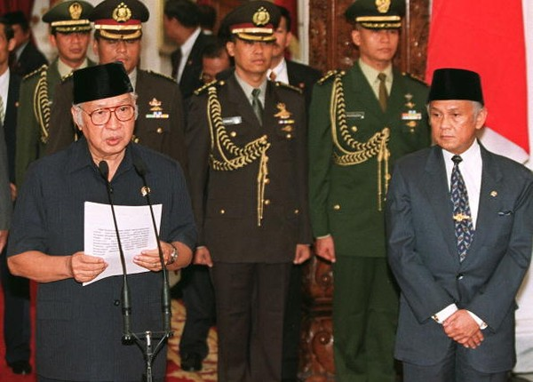
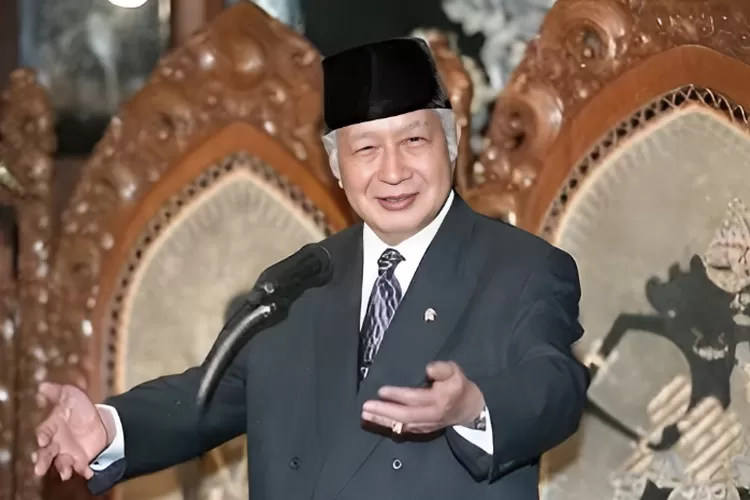
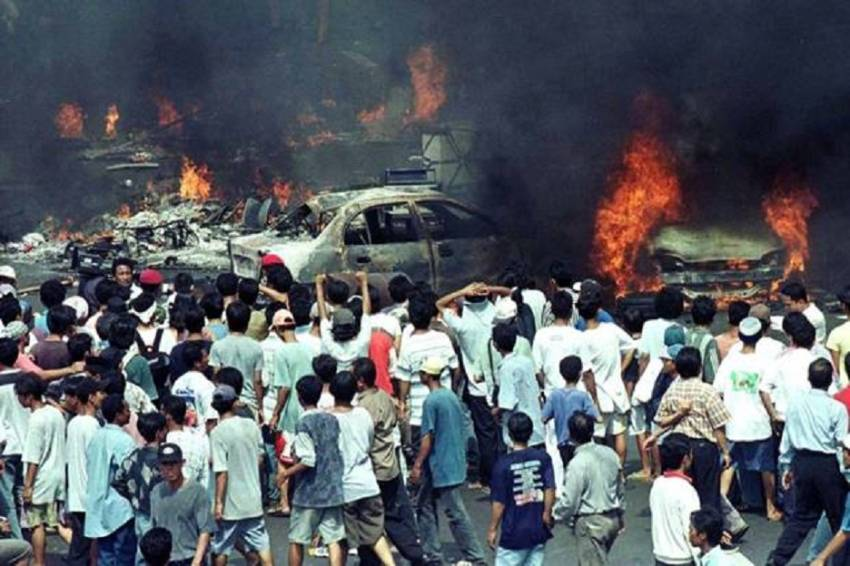
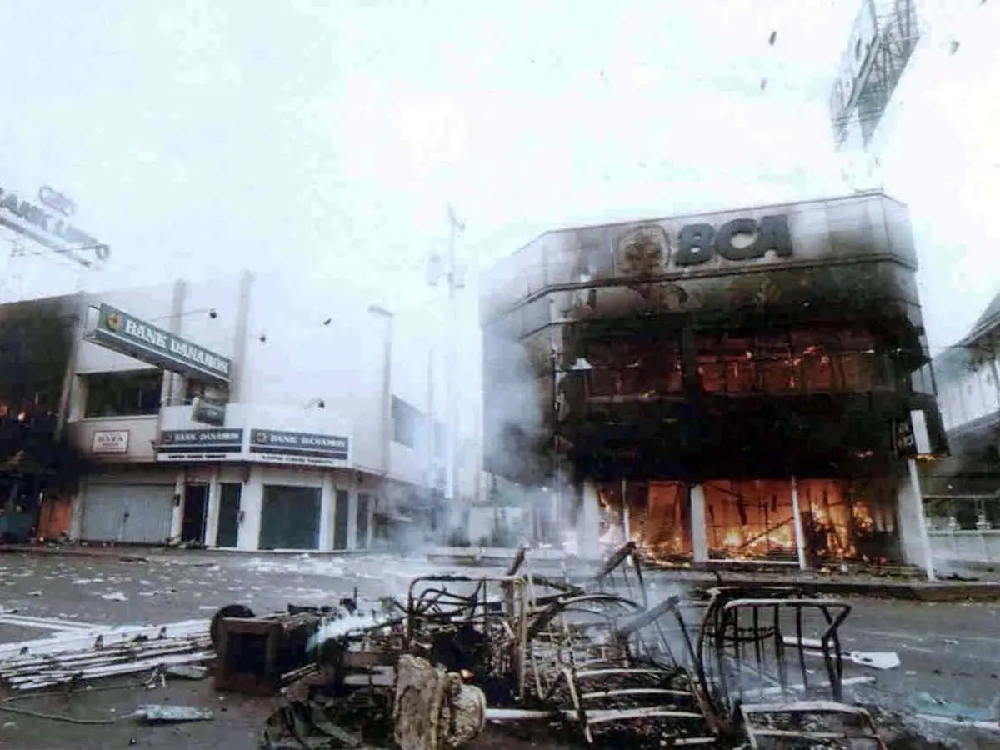
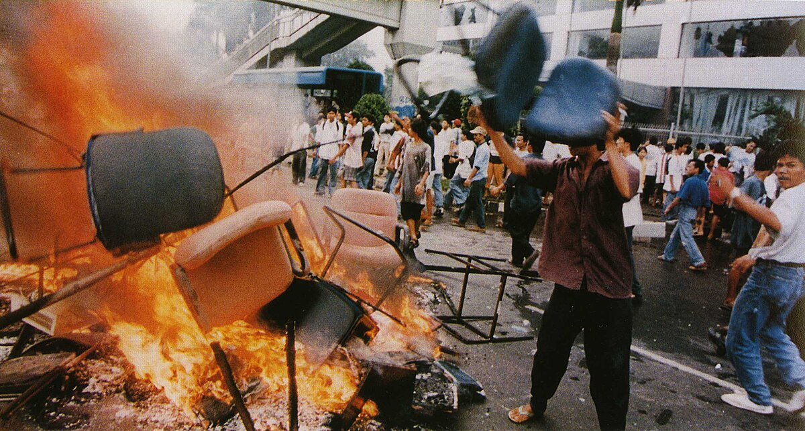
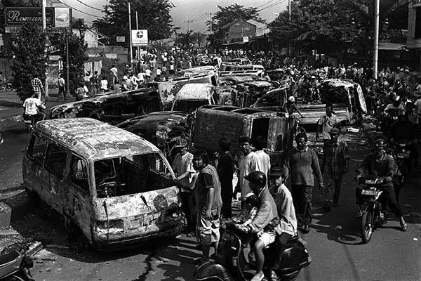
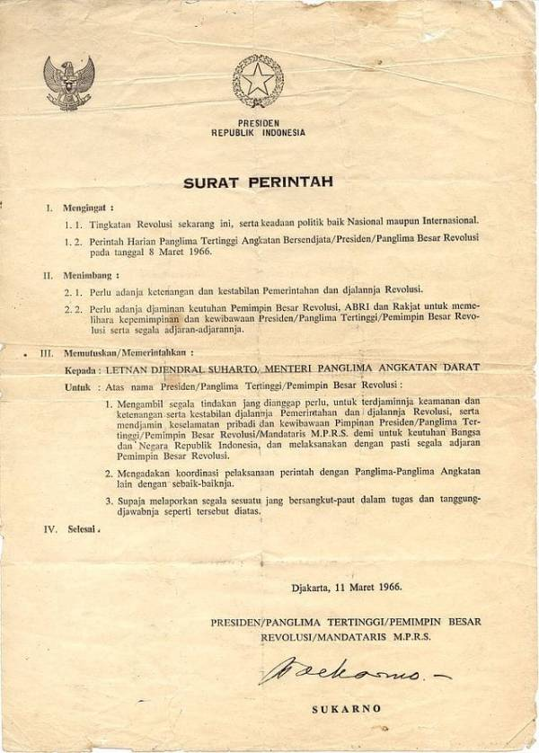
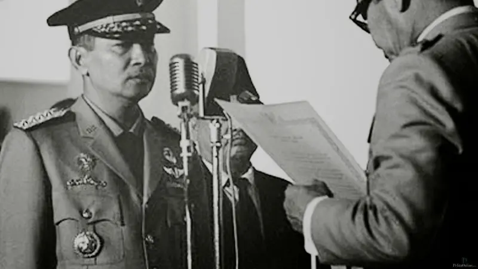

Demokrasi Pancasila
Merupakan masa dimana Pancasila mulai benar-benar diterapkan dan paham komunis yang ada di Indonesia dimusnahkan Era ini ditandai dengan meningkatnya stabilitas ekonomi berkat Presiden Soeharto. Dari demokrasi terpimpin oleh Soekarno berubah menjadi era demokrasi ini yang lebih demokratis dan dipimpin oleh Presiden Soeharto. Visi demokrasi ini adalah menerapkan Pancasila dan menanamkan Pancasila dalam kehidupan para warga Indonesia

🕮 Sejarah
|


|
🗣 Peristiwa Penting
Kerusuhan Mei 98
Bukan pemberontakan namun terjadi kerusuhan pada era demokrasi Pancasila di orde baru ini. Kerusuhan ini
merupakan puncak era demokrasi Pancasila (orde baru) yaitu kerusuhan Mei 1998 yang sangat menentang sila
ketiga dan kedua Pancasila. Kerusuhan ini merupakan tindakan genosida (pembasmian suatu ras, di sini ras
Tionghoa). Diawali oleh krisis finansial Asia dan dipicu oleh tragedi Trisakti. Tragedi Trisakti adalah di
mana empat mahasiswa Universitas Trisakti ditembak dan terbunuh dalam demonstrasi 12 Mei 1998. |




|
|
|


|
SupersemarSupersemar atau Surat Perintah Sebelas Maret adalah surat perintah instruksi bagi Soeharto untuk menangani keamanan negara yang sedang kacau saat itu. Supersemar ditandatangani langsung oleh Soekarno pada 11 Maret 1966. Surat ini menjadi salah satu penanda peralihan orde lama menuju orde baru. Dengan surat ini Soeharto membubarkan PKI sehingga akibatnya, banyak anggota dan simpatisan PKI, juga warga biasa menjadi korban orde baru. Surat ini bertujuan agar Soeharto bertindak menanggapi situasi politik dan keamanan negara. |